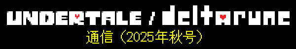

『UNDERTALE』がリリースされて、今年で10年…
ということで…
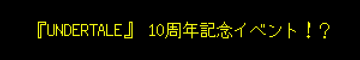
…を、開催します！
僕たちが『UNDERTALE』をプレイするところを、実況配信します！『DELTARUNE』Chapter 1も実況配信イベントをしましたが、あれと同じです！（配信は英語のみです）
（トビーはカレンダーを見た。アメリカでは、10周年記念日はウィークデーだ）
あー…
じゃあ、配信イベントは、10周年記念日の次の週末にしましょうか。
2日間にわたって行います。日本時間の9月21日と22日の午前8時からです。
試しにプレイしてみたら、8時間以上かかってしまって…
なので、半分ずつに分けます。1日目に半分プレイして、残りは次の日に。
そんなに長い時間、話しつづけるなんて… みんな、見てて楽しいかな…？
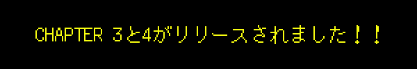
ご存じのとおり、『DELTARUNE』のChapter 3と4がリリースされました。
この2つのチャプターを振り返りつつ、僕の考えを話したいと思います！
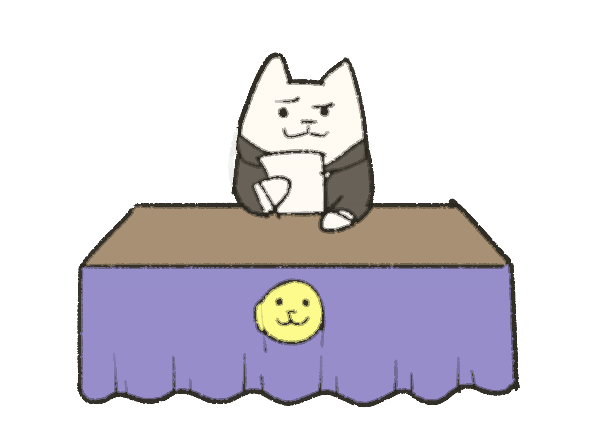
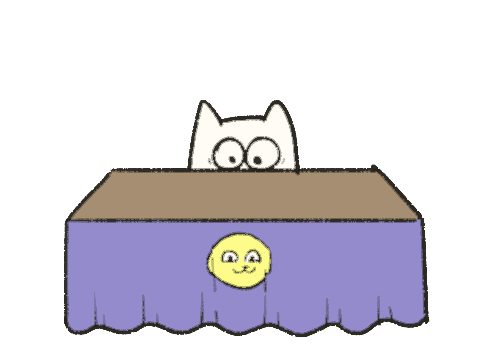
とは言ったものの…
今はそんなことしている場合じゃありません…
だって今日は、10周年記念日です。
今はそんなこと話してる場合じゃありません…

かわりに、Chapter 5の話をしましょう！
どんなチャプターになるのか、気になってる人もいるでしょうね…
でも、今はチャプターの内容についてお話する理由はありません…
だって、僕もみなさんも、ネタバレはイヤ。でしょう？
チャプター全体を思い浮かべてみて、現時点でみなさんにお伝えしたいと思える部分は、ほんのちょっぴりしかありません…
それを踏まえた上で、あくまでも善意で、キャッスルタウンで見られるオプションシーンのネタバレをしたいと思います。このシーンは、Chapter 4で「スペシャルルーム」を見ていることを前提にしています…
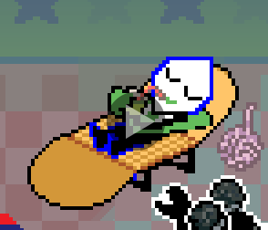
次回は、キャッスルタウンの様子をもう少しお見せできると思います。
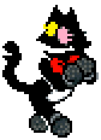
2025年9月8日現在の進捗を、くわしくお伝えします。
エリア
- Chapter 5の序盤は完成していますが、オプションエリアの仕上げがまだ済んでいない状態です。
- 最後の40％ぐらいの部分は「初稿（ラフ）」の段階で、最後の10％ぐらいの部分は「試作」の段階です。
- カットシーンの85％ぐらいは「初稿」の段階まで完成していますが、そのうちの少なくとも20％ぐらいはもう少し仕上げが必要です。
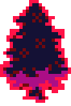
敵
- ザコ敵はだいたい完成しています。プログラマーのうち1人は、すでにChapter 6に登場するザコ敵たちの弾幕パターンの制作に取りかかっています。
- ボス戦のディレクションが固まって、ボスの攻撃の多くが完成しました。
- 攻撃が全部完成したら、次は、それらの攻撃を編成して、必要に応じて、バトルの雰囲気に合うように調整を加える作業に入ります。

全体
Chapter 3と4では、開発の進みを止める「難所」がいくつかありました。Chapter 3の「パーク」をどうやって実現するかとか、ノエルの家でのイベントをどうデザインするかとか…
そういう「難所」を越えて、チームのメンバーを増やしてからは、開発がずっとスムーズに進みました。
Chapter 5にも、難所はありました！でも…目に見えて開発が難しいところは全部越えたので、進みを止める要素はもう、ほぼありません！あとはひたすら、制作を続けていくだけです。

タイムライン
おおまかなタイムラインは、こんな感じです。
制作（イマココ）
v
ローカライズ／制作／移植
v
完成
v
テストとバグ修正
v
リリース
今のところ、大きな締め切りは1つ…「2025年中に翻訳作業が開始されるようにしたい」。翻訳作業が始まってしまうと、ゲームプレイのみの変更はセーフですが、テキストを大幅に変えたりストーリーを変更したりすると、ローカライズチームに大迷惑がかかってしまいます。
そして、ローカライズとテストの期間を考慮すると…2026年前半のリリースは厳しいかと思います。
…でも、驚くことじゃないですよね？前回の進捗レポートを見れば、開発の各ステップにどれぐらいの時間がかかるか、みなさんもわかると思うので。
今回は、リリース日を決める上で外部的な要因は何もないので、完成した時点で配信します。今後も進捗をお知らせしていきますね。よろしくお願いいたします！

『Homestuck』の話をします。
知らない方のために説明すると、『Homestuck』は、僕のキャリアの第一歩となったWEBコミックです。時は2010年。当時の僕は、作曲をしたいなんて気持ちはこれっぽっちも持っていない高校生でした。でも、あるWEBコミックと出会って大好きになって、 運命が変わりました。そのコミックにはアニメーションシーンがあって、音楽は「Homestuck Music Team」という才能あふれるミュージシャンたちが制作していました。彼らみたいに、大好きなコミックに関わりたい…そんな気持ちを抱いていたある日、ミュージシャン募集のお知らせが発表されて、僕はすぐさまこの「コンポーザーになる」というチャンスに飛びつきました。ヘタクソな曲を作って応募してみると…コミックの作者さんは、僕をチームに入れてくれたんです！
せっかくチーム入りを果たしたチャンスを逃したくなかった僕は、ものすごくがんばりました。他のミュージシャンたちの曲のいろんなモチーフを組み合わせて、できるだけたくさんの曲を作りました。この経験が、コンポーザーとしての今の僕を作り上げてくれました。
しかも、このコミックに関わったことでSNSのフォロワーが増えて、そのおかげで自分のゲーム（『UNDERTALE』）の制作のためにKickstarterのプロジェクトを立ち上げたとき、ものすごく助かりました（僕が『UNDERTALE』を作れたのは、このKickstarterプロジェクトのおかげです）。僕が初めてテミーに連絡したのも、テミーがTumblrに投稿していた『Homestuck』のファンアートがきっかけでした。
そんなわけで…『Homestuck』にはすごく恩があるんです！作曲家として成長できたのも、自分のゲームを作れたのも、大切な友だちとつながれたのも、『Homestuck』のおかげでした。ファンのみなさんとの接し方も学んだし、ファンを大切にすることがいかに重要かも教えられました。僕の中では、一生かかっても返しきれない恩です。
だから、今回新たに『Homestuck』のアニメーション（英語のみ）が制作されることになって、手を貸してほしいと言われたとき、「やってみます！」と答えたんです。意外だったのは、その依頼は音楽制作ではなくて、声優としての出演依頼だったことですが…それでもやっぱり、お手伝いしたいと思いました。
ちなみに、音声収録スタジオでもサプライズがありました。音響監督さんといっしょに実際に収録を始めて数分後、「あれ？」と思ったんです。「この声…『アングリー・ビーバーズ』のダゲットじゃない？？？」って。なんと監督さんは、『インベーダー・ジム』でジムの声優を担当している、リチャード・ホーヴィッツさんだったんです！収録には数時間かかったんですが、あんまり楽しくて、一瞬で終わったように感じました。僕はプロの声優じゃないので、仕上がりが不安だったんですが、インベーダー・ジムが「よかったよ」と言ってくれたので…彼を信じるしかないですね。
以上、僕が『Homestuck』のお手伝いをした話でした！
それではここで、そのアニメーションのトレーラーをお見せしましょう！僕が演じたのは、メガネをかけた子ども、「John Egbert」です。でも、ちょっとその前に、繊細な読者のみなさんのために、1つだけご注意を…
『Homestuck』には、乱暴な言葉遣いがたくさん出てきます。僕も、セリフで下品なことをたくさん言わされました。そういう言葉を聞きたくない方やお子さまは、このトレーラーは見ないことをおすすめします！
以上です。
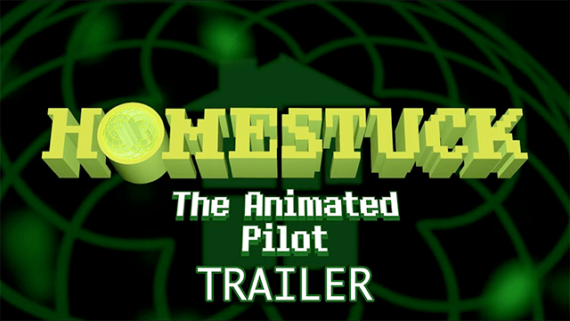
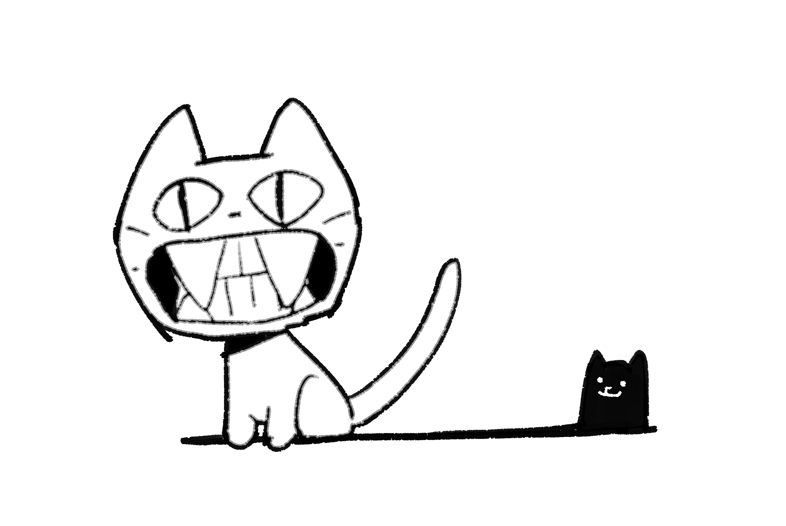
Fangamerが開発した『OFF』のリメイク版が、Nintendo SwitchとSteamで発売されます。『OFF』はRPGツクールで制作された伝説的なゲームで、このゲームに登場するキャラクターから、サンズとパピルスのデザインの着想を得ました。
ネット上で永久に無料公開されているオリジナル版の音楽を制作したAAC氏は、「自分が作った曲はリメイク版に使用してほしくないけど、リメイク版チームで新しい曲を作るのはかまわない」という意向で…少し特殊な状況だったんですが、『OFF』のクリエイターのMortis Ghost氏から、手を貸してほしいと頼まれました。そういうわけで、僕もいくつかのBGMを制作しています。
YouTubeでも聴けます。
どうぞお楽しみください！
最近、『UNDERTALE』と『DELTARUNE』のカバー曲を収録したアルバムがいくつか発表されて、みなさんにもぜひおすすめしようと思ったので、ご紹介します。
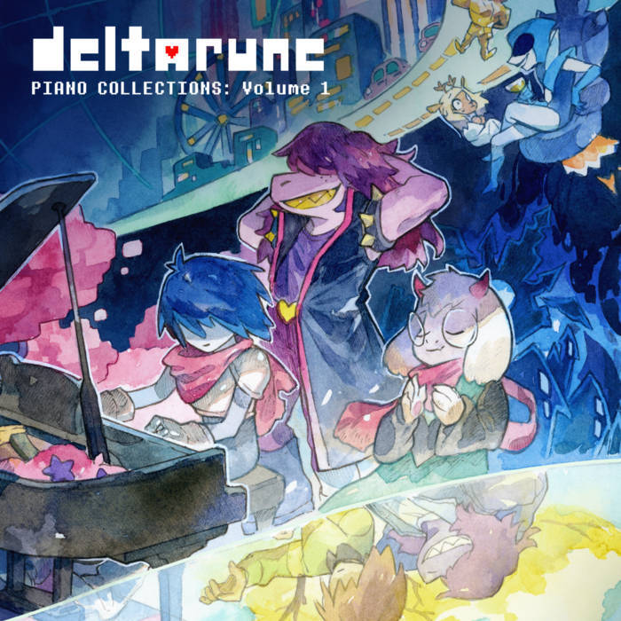
『DELTARUNE Piano Collections, Vol. 1』（配信中）
Trevor Alan Gomes氏が手がける、『DELTARUNE』の楽曲の芸術的なピアノアレンジ。ホントに、ホントに、おすすめです。YouTubeで無料で試聴もできます。
『Monstercat x UNDERTALE』（2025年10月6日リリース）
MonstercatとFiraga Recordsが企画した、『UNDERTALE』の楽曲のエレクトロニックアレンジアルバム。たくさんのアーティストたちが力を注いで制作した一枚で、みなさんの才能が輝いています。2025年10月6日（月）にフルバージョンがリリースされ、パッケージ版も後日発売予定です。事前追加／先行購入は、こちらからどうぞ。
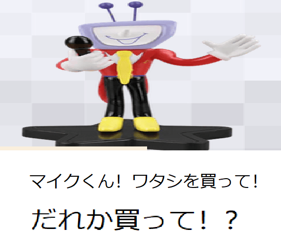
10年もたったなんて、なんてうざいことでしょう。
…それって、僕がうざいってこと？
…配信イベントに備えて、あまりしゃべりすぎないようにします。